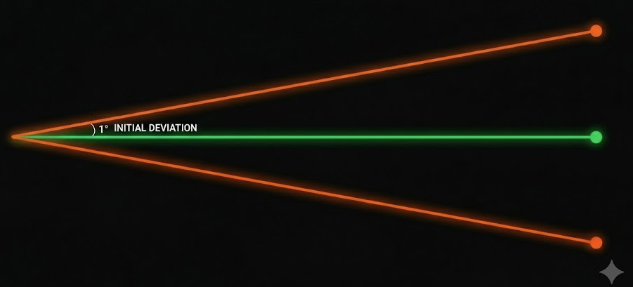
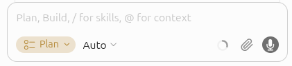
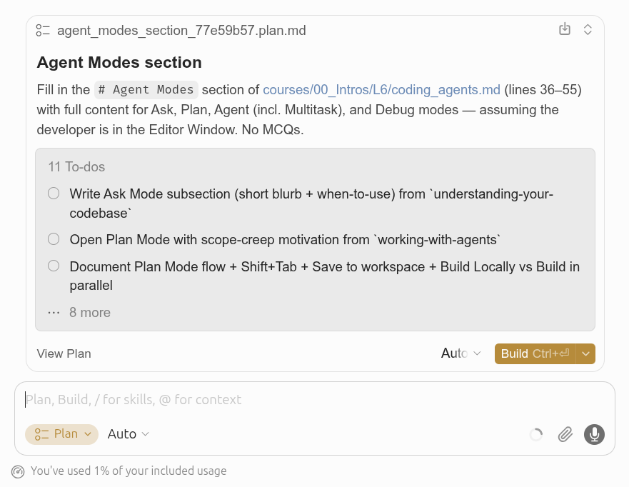
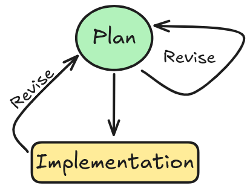

An agent is built on three basic components:
Cursor’s Coding Agent supports the use of Modes:
Switch to Ask before you change anything — a common failure pattern with coding agents is asking for changes before understanding what already exists.
Ask Mode is read-only: the agent can search and read your codebase, fetch documentation, and answer questions, but it cannot edit files, run terminal commands, or change anything in your workspace.
Under the hood, Ask uses the same search tools as Agent Mode:
grep/ripgrep.Example 1:
Example 2:
Example 3: asking about the timeline of a specific function, module, or class utilizing the git history and GitHub issues:
Suggested by Boris Cherny from Anthropic
Example 1:
Example 2:

Straight horizontal green line, representing intended trajectory, and two deviating lines.
Earlier course correction can save you a lot of frustration (and money).
How much time to spend on each phase?
Execution is handled by agents; so you can keep working on other tasks while the agent is working on the plan.
Press Shift+Tab from the chat input to cycle modes until you reach Plan, or pick it from the mode dropdown. Cursor also suggests Plan Mode automatically when your prompt describes a complex task.

Plan Mode in the agent input

Click Save to workspace to keep the plan in .cursor/plans/.
You have two ways to refine a plan before clicking Build:
Plan.md file directly: you can tighten step descriptions, delete wrong assumptions, add file references.You might want to collaborate on this, and clarify things with your teammates before moving on.
Especially for large changes, spend extra time creating a precise, well-scoped plan. The hard part is often figuring out what change should be made.
If the agent goes off track — wrong direction, unrelated edits, drifting scope — do not keep patching with follow-ups. Rather, undo and revise the plan itself:
Esc or the Stop button.Cmd/Ctrl+Z in chat, discard in Source Control, or Revert on a past message.~/.cursor/plans/... if not saved to workspace.
Agent Mode is the most general mode, it allows the agent to edit files, run terminal commands, and change anything in your workspace.
Debug Mode helps you find root causes and fix tricky bugs that are hard to reproduce or understand. Instead of immediately writing code, the agent generates hypotheses, adds log statements, and uses runtime information to pinpoint the exact issue before making a targeted fix.
Debug Mode works best for: Bugs you can reproduce but can’t figure out: when you know something is wrong but the cause isn’t obvious from reading the code.
When standard Agent interactions struggle with a bug, Debug Mode provides a different approach using runtime evidence rather than guessing at fixes.